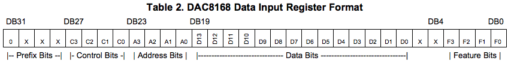

Marbles, Stages and Tides 2018 use an unusual technique for sending data to DAC816x digital to analog converters.
Principle
These converters have a standard SPI interface, but instead of using the SPI peripheral of the STM32F, the I2S interface is configured in such a way that the signals it generates can be interpreted as a valid signal by the DAC.
The benefits are twofold:
- The timing is extremely accurate, since the I2S peripheral is sending an uninterrupted stream of data.
- There is no overhead associated with toggling the CS line, and individually sending each packet of 32 bits required to set an output.
Example
In this example, we see how to use I2S to write 8 channels of the DAC8168.
Hardware connections:
- MCU I2S CK -> DAC SCK
- MCU I2S SD -> DAC MOSI
- MCU I2S WS -> DAC SS/!SYNC
For a refresh rate of 48kHz, the I2S sample rate must be set to 48*8 = 384kHz. The data format must be set to 32-bit, PCM short. With these settings, the data from each L channel will be written to the converter's shift register. The right channel is not used: when its data is shifted out, the word select (WS, aka LR, aka LRCK, connected here to the SS pin of the DAC) is high, and the DAC will ignore the data.
The buffer size must be set to a multiple of 8. For example, it can be set to 16 (which means 16 stereo frames must be provided at each call of the DMA IRQ handler).
Thus, an ISR will be received 24k times per second, during which the data for the value of 2 samples for each of the 8 channels must be provided.
The buffer must be filled with the following data.
Frame 0, L channel: channel 0 sample 0.
Frame 0, R channel: 0.
Frame 1, L channel: channel 1 sample 0.
Frame 1, R channel: 0.
...
Frame 7, L channel: channel 7 sample 0.
Frame 7, R channel: 0.
Frame 8, L channel: channel 0 sample 1.
Frame 8, R channel: 0.
...
Frame 15, L channel: channel 7 sample 1.
Frame 15, R channel: 0.
For each channel/sample, the 32 bits consists in:
- 12-bit of prefix/control/address with the command Write to Selected DAC Input Register and Update Respective DAC Register (
0x3) and the channel number. - 14-bit of sample data, within the resolution of the DAC.
- 2 bits of sample data, whose behavior is unspecified for a 14-bit DAC.
- 4 feature bits left empty.

Thus, the first 16 bits are 0x0300 | (channel << 4) | (sample >> 12) and the next 16 bits are sample << 4.
Code
- Stages : STM32F37x + DAC8168
- Tides 2018 : STM32F37x + DAC8164
- Marbles : STM32F4xx + DAC8164